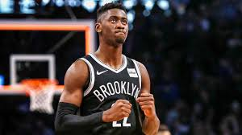
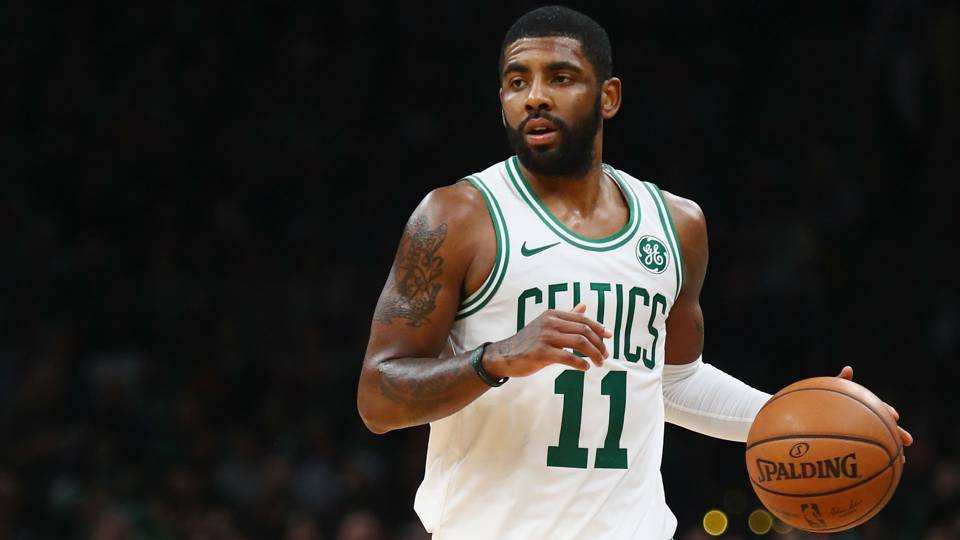

Stay updated on all things in the sports world right here with GroupCast Sports! From the depths of Mississippi high school football to headline news in the NBA, our journalists strive to provide you with the best interviews and insight possible on a daily basis. From our different series including Tiger Talk and Hot Seats, there will always be something for YOU!
Check out our YouTube Channel!
The highlight of the next few months for GroupCast Sports will be covering the NBA Playoffs as the first round starts this week! There are many matchups to watch in the first round including the Oklahoma City Thunder and Portland Trail Blazers who face off for the first time on Sunday at 3:30 EST. Below is a table with the updated playoff standings for each team in the NBA.
| Western Conference | Series Record | Eastern Conference | Series Record |
|---|---|---|---|
| Golden State Warriors vs Los Angeles Clippers | 1-1 | Milwaukee Bucks vs Detroit Pistons | 2-0 |
| Denver Nuggets vs San Antonio Spurs | 1-1 | Toronto Raptors vs Orlando Magic | 2-1 |
| Portland Trail Blazers vs Oklahoma City Thunder | 2-0 | Philadelphia 76ers vs Brooklyn Nets | 1-1 |
| Houston Rockets vs Utah Jazz | 2-0 | Boston Celtics vs Indiana Pacers | 2-0 |

Image courtesy of USA Today
A sometimes forgotten player for the Brooklyn Nets, Caris Lavert will be a key factor if the Nets wish to upset the Philadelphia 76ers in the first round. After averaging 13.7 points, 3.9 assists, and 3.8 rebounds in his shortened regular season run, Lavert will have to contribute more on the offensive side of the ball to take some pressure off D'angelo Russell in this series.

After missing the Boston Celtics playoff run last season, Kyrie Irving will be making his first playoff appearance wearing green and white. Last season, Boston advanced to the Eastern Conference Finals where they were met by Lebron James and defeated in Game Seven. However, amid a load of contreversy this season, Kyrie will look to lead this team of young, talented players to the NBA Finals for the first time in ten seasons. The Boston faithful has a lot to be excited about this postseason with a lot of action packed basketball looming in the next few months.